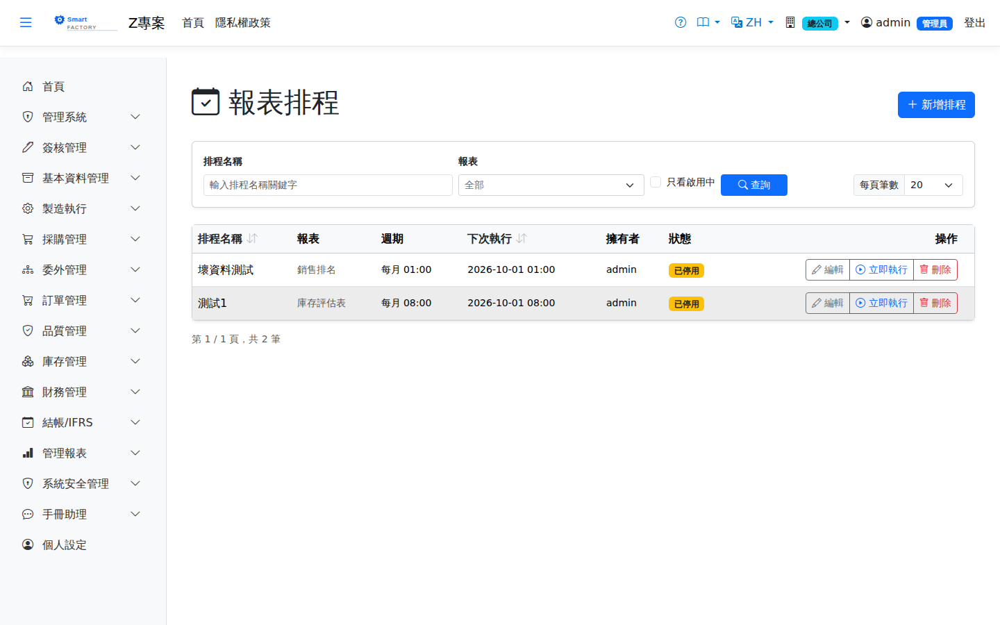

報表排程Report Schedules
把一份報表設定成每日／每週／每月自動產生，產生後放進指定收件人的「報表收件匣」。系統不寄送電子郵件——報表留在系統內，收件人下載時會重新檢查權限，離職或調職的人不會再拿得到檔案。Set a report to be produced automatically every day, week or month, and delivered to the Report Inbox of the people you nominate. The system sends no email — the report stays inside the system, and permission is re-checked when the recipient downloads it, so people who have left or changed jobs can no longer get the file.

操作步驟How to use it
注意事項Points to note
排程只在「報表工具」功能開啟的環境才會執行；未開啟時排程不會執行，啟動記錄會明確寫出受影響的筆數。停機期間錯過的排程不會補跑——補跑「上個月」結果相同，補跑「昨天」卻會取到錯誤的一天，因此系統一律不補。執行時會重新檢查擁有者對該報表的權限，若權限已失效，系統會自動停用該排程並在執行紀錄留下原因，不會靜默停止。報表只查排程所屬廠別的資料：執行成功卻是 0 筆時，先確認清單上的「廠別」是不是資料所在的廠別。Schedules only run where the Report Tools feature is switched on; when it is off they do not run and the startup log states how many are affected. Runs missed during downtime are not caught up — re-running "last month" gives the same answer, but re-running "yesterday" would pick the wrong day, so nothing is caught up. At run time the owner's permission for the report is checked again; if it has been revoked the schedule is disabled automatically and the reason is recorded in the run history, never silently stopped. A report covers only the data of the schedule's plant: if a run succeeds with 0 rows, first check that the Plant column shows the plant where the data lives.
欄位說明Field reference
查詢條件Query criteria
| 條件Condition | 說明Guide |
|---|---|
| 排程名稱Schedule Name | 以名稱關鍵字篩選Filters by keyword in the name |
| 報表Report | 只看某一支報表的排程Shows schedules for one report only |
| 廠別Plant | 預設只列目前所在廠別的排程；選「全部廠別」可看所有廠別的排程Lists only the current plant's schedules by default; choose All plants to see every plant's schedules |
| 只看啟用中Active only | 勾選後隱藏已停用的排程Hides disabled schedules when ticked |
設定欄位Setting fields
| 欄位Field | 說明Guide |
|---|---|
| 對象廠別Target plant | 唯讀。新增時是目前所在的廠別，編輯時是排程原本的廠別。報表只查這個廠別的資料，查詢期間與執行時刻也依它的時區計算；要建立其他廠別的排程，請先切換到該廠別Read-only. When adding, it is the plant you are currently in; when editing, the plant the schedule was created for. The report covers this plant's data only, and the period and run time follow its time zone. To schedule for another plant, switch to that plant first |
| 排程名稱Schedule Name | 同一人不得重複；名稱也會成為下載檔名的一部分Must be unique per person; it also forms part of the downloaded file name |
| 報表Report | 要自動產生的報表；只列出您有權限執行的The report to produce; only those you may run are listed |
| 查詢期間Period | 存的是What is stored is a 滾動期間rolling period（例如「上月」「昨天」），每次執行都重新解算成當下的日期，不是固定的那一段日期；只有需要期間的報表才會出現這個欄位，出現時必填 such as "Last month" or "Yesterday", resolved into actual dates on every run rather than a fixed date range. The field appears only for reports that need a period, and is compulsory when it does |
| 執行週期Frequency | 每日／每週／每月，僅此三種Daily, weekly or monthly — these three only |
| 星期Day of Week | 每週時適用Applies to weekly schedules |
| 每月第幾日Day of Month | 每月時適用；設 29～31 遇天數不足的月份順延至該月最後一日Applies to monthly schedules; 29–31 falls back to the last day in shorter months |
| 時／分Hour / Minute | 執行時刻Time of day the schedule runs |
| 輸出格式Output Format | Excel 保留欄位格式；CSV 適合再匯入其他系統Excel keeps column formatting; CSV is easier to import elsewhere |
| 收件人Recipients | 報表送進其收件匣；下載時各自重新檢查權限The report lands in their inbox; each download re-checks their permission |
| 啟用此排程Enable this schedule | 停用後不再自動執行Disabled schedules no longer run automatically |
| 下次執行Next Run | 系統依週期自動計算，設定一改即重算；以排程所屬廠別的時區顯示，並在時刻下方標出時區Calculated from the frequency and recalculated whenever the setting changes; shown in the time zone of the schedule's plant, with the zone printed below the time |